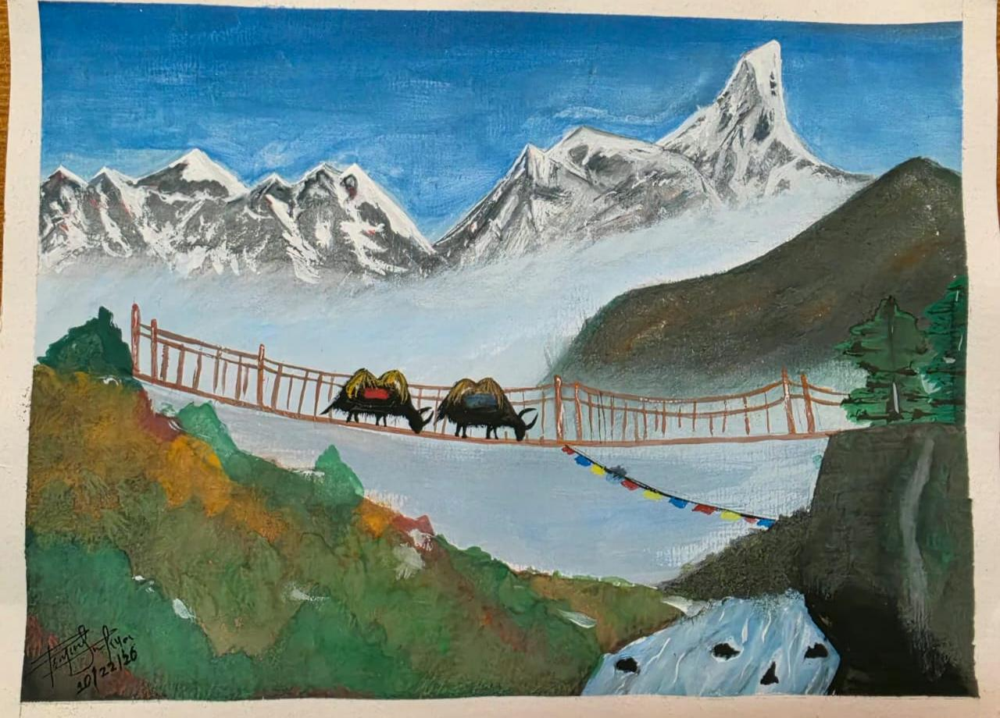
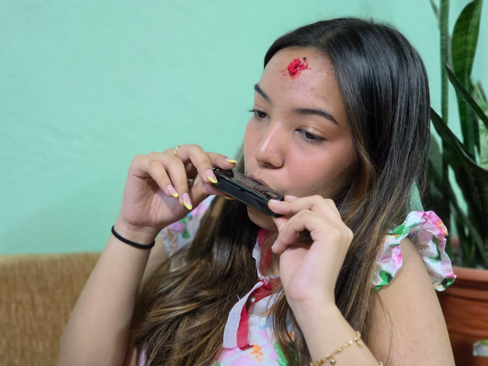

06 — CREATIVE WORK
Creativity in different forms.
VISUAL ART · MANDALA INK
Detail, patience, and a little bit of obsession.
Mandala art started for me as lockdown boredom and turned into something I fell in love with. I sketch in pencil, build each section detail by detail, then trace everything in ink.
My Ganesh mandala took almost five days. A distant relative saw an earlier piece online and asked for one, and it eventually made its way to her home in America.
ACRYLIC PAINTING
Exploring color, texture, and place.
I used acrylics to paint a Himalayan landscape, bringing together snow-covered peaks, a suspension bridge, prayer flags, and the surrounding hills. Working across these different elements challenged me to explore texture, depth, and the ways color can bring a landscape to life.

MUSIC · VOCALS, GUITAR, HARMONICA
Finding My Sound.
Singing started with my dad, who made it look effortless. For a long time I didn't trust that I was any good, until friends at school told me I was, and house competitions followed.
Singing alone always felt incomplete, so I picked up guitar. The first song I sang and played at the same time was “Stand By Me,” still a core memory. Harmonica came from one thing: the harmonica line in “Piano Man.”


DANCE
A constant since preschool.
I've danced since preschool, and my school offered classes from a young age. I've performed in group settings, including a competition where our team placed second.
What keeps me coming back is how dance lets me express things that are sometimes difficult to put into words.

NAIL ART & DESIGN · CERTIFIED NAIL TECHNICIAN
Turning a small interest into a skill.
Nail art has interested me since I was young. During my gap after Grade 12, I turned that casual interest into an actual skill, took classes, and earned my certification.
What I enjoy most is bringing my art background into small, intricate designs where even the smallest detail matters.